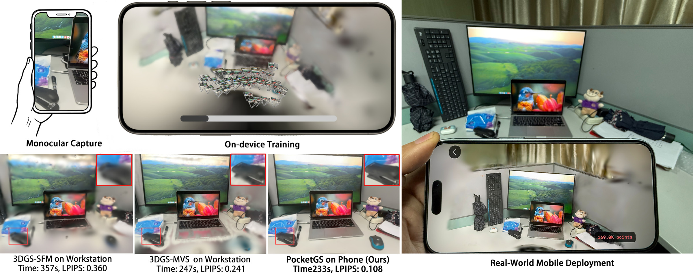

Peak memory
Standard training workflows assume generous workstation memory, creating a hard fit problem for phones.
PocketGS makes end-to-end 3D Gaussian Splatting training practical on a commodity smartphone - from handheld capture to a high-quality, real-time 3D scene.

Mobile capture-to-render workflows need to contend with tightly coupled limits on memory, time, thermal budget, and numerical stability - without surrendering reconstruction quality.
Standard training workflows assume generous workstation memory, creating a hard fit problem for phones.
A usable on-device experience needs reconstruction in minutes, not the long optimization windows common in offline pipelines.
Mobile optimizations must preserve crisp geometry and high perceptual quality in the rendered scene.
PocketGS reshapes the 3DGS training pipeline around three coordinated operators, turning resource constraints into first-class design inputs.
Build local surface statistics to seed anisotropic Gaussians, reducing early conditioning gaps.
Unroll alpha compositing with cached intermediates to support a stable mobile backward pass.
Map gradients efficiently for memory-conscious optimization on the device.
PocketGS is presented as a fully on-device capture-to-render workflow, with quality and device resources measured under a controlled 500-step horizon.
MobileScan PSNR
Highest reported MobileScan PSNR at the controlled 500-step horizon.
Post-capture time
Average MobileScan processing time on an iPhone 15.
FPS
Reported smartphone rendering throughput after fully on-device training.
@article{guo2026pocketgs,
title = {PocketGS: High-Fidelity On-Device Training for 3D Gaussian Splatting},
author = {Anonymous Submission},
year = {2027}
}